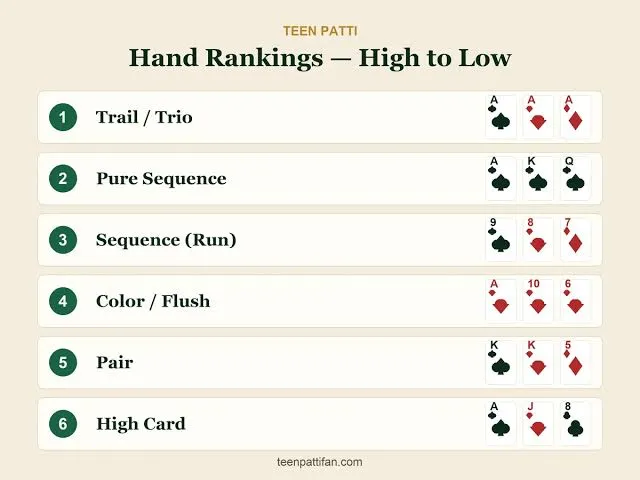

Teen Patti Gold
Teen Patti Gold free download for Android in Pakistan to experience an engaging online card game. Check out its main features, game modes, setup guide, system compatibility, winning strategies, free bonuses, and frequently asked questions.
Find out everything you need to know about Teen Patti Gold before downloading and installing the APK on your mobile device. Learn how to set up your account quickly, master the gameplay, and enjoy smooth, uninterrupted matches on your smartphone.
App Information
Name
Teen Patti Gold
Version
Latest Version
APK Size
85 MB
Category
Card Game
Downloads
1M+
Android
Android 5.0+
Developer
Teen Patti GoldTeam
Latest Update
2026
Introduction
Teen Patti Gold is an Android card gaming app designed to bring classic Teen Patti action directly to smartphones. Built for card enthusiasts, it offers an easy way to play Teen Patti anytime on mobile devices. Its straightforward menu helps beginners learn the core rules quickly, while seasoned players can access advanced features and various gameplay options.
With widespread smartphone usage in Pakistan, mobile card games offer instant digital access. Teen Patti Gold delivers a practical way to enjoy card matches without needing physical decks or offline setups. Depending on the build, users can explore diverse tables, game variants, social modes, and interactive features within the app.
Before installing Teen Patti Gold, confirm the current app version, system requirements, file safety, and installation steps. This guide covers key details including game features, gameplay mechanics, hand rankings, Android setup, troubleshooting, security practices, updates, and responsible play.
What Is Teen Patti Gold?
Understanding Teen Patti Gold
Teen Patti Gold is a mobile card gaming app built for Android platforms, centered around traditional Teen Patti rules. Teen Patti is a popular South Asian card game enjoyed across various formats by traditional card game fans. The Android release enables players to access this traditional card title anywhere using their smartphones.
The primary purpose of Teen Patti Gold is to deliver a complete digital card environment. Instead of managing physical cards, users control gameplay directly on screen. Intuitive touch controls make the overall flow easy to pick up.
Specific tools and features in Teen Patti Gold vary by app version. Different builds may introduce interface tweaks, added modes, alternative reward structures, new login choices, or technical fixes. Always review current build notes before downloading the APK.
How Teen Patti Gold Works
Teen Patti Gold operates on classic 3-card Teen Patti rules, where participants assess their hands against competitors based on standard hand rankings. Winning a round relies on the strength of the cards dealt and the combinations formed.
Mastering hand rankings is key to playing effectively. Stronger card combinations outrank basic ones, so understanding these valuations is essential for new players.
The digital app handles card shuffling and dealing automatically, making matches fast and smooth. However, players should still review the in-game rules, as custom game modes may introduce slight variations.
Teen Patti Gold for Android Users
Teen Patti Gold is tailored for Android users seeking mobile card games. Because Android hardware varies widely, overall game performance depends on individual phone specifications.
Modern devices with sufficient RAM, free storage, and a stable internet connection run the app much better than older hardware. Check your hardware specs before proceeding with the installation.
Always use caution when downloading third-party APK files. Source reliability is vital to protect your phone from corrupted files or untrusted software.
Teen Patti Gold Latest Version
Why the Latest Version Matters
Running the newest app version ensures access to recent developer updates, performance enhancements, bug fixes, UI refinements, and improved support for updated Android OS releases.
Outdated builds may crash, fail to log in, or disconnect from online servers after backend updates. Keeping the application up to date helps avoid performance bugs.
Verify the build number before installing Teen Patti Gold. Download from verifiable sources and avoid sites making misleading claims about file versions.
New Improvements and Updates
Routine updates focus on boosting stability and refining the user experience. Patches frequently improve menu loading, resolve visual bugs, optimize code, and extend support for newer Android builds.
Certain updates also bring fresh gameplay choices. If Teen Patti Gold supports multiple tables, updates may update rules or introduce new game formats.
Feature updates vary by release, so review the latest patch notes and app details before downloading a new build.
Checking Version Information
Confirm the file version on the download page before starting the APK download. Inspect the file name carefully, as unverified sources sometimes rebrand older files as new updates.
Check the publish date of the download source. Inactive pages may offer outdated APK versions.
If version details conflict across different sites, stick to trusted sources. Avoid downloading multiple unverified APKs just to find an update.
Teen Patti Gold Features
Simple and Easy Interface
An intuitive design allows card players to navigate menus without complex learning curves. Teen Patti Gold uses a simple mobile layout focused on effortless navigation.
A clean visual layout lets beginners focus directly on gameplay. Game elements like action buttons, tables, and cards are formatted clearly for quick identification during matches.
Visual designs can evolve across updates. New releases may update menu art, graphics, or layout structures, giving each version a fresh look.
Classic Teen Patti Gameplay
Standard gameplay revolves around traditional 3-card hands. Players analyze their dealt hands and compete based on established Teen Patti combinations.
While card rules are straightforward, match outcomes depend on chance. Play responsibly and view the game as entertainment rather than a reliable source of income.
New players should start with classic game modes to learn hand values before exploring additional variants available in the app.
Different Game Modes
Multiple game modes keep gameplay engaging by offering diverse rule sets and table types. Teen Patti Gold provides several play choices depending on the installed version.
Beginners can stick to default modes for a traditional experience, while experienced players can join alternate modes with custom rules and higher table stakes.
Check the in-game lobby to see available modes. Play options update regularly, so features may vary from previous app releases.
Social Gameplay
Select app versions include social tools that connect players online. These features make matches more interactive by letting users play alongside friends or meet other online opponents.
Social options may feature custom tables, chat options, or friend lists. Always exercise caution when interacting with unknown players online.
Never share account passwords, financial data, or sensitive personal details in chat. Maintain strong digital privacy habits at all times.
Teen Patti Gold Gameplay
Starting a Game
Initiating a round in Teen Patti Gold requires picking your preferred table or game variant. Depending on your active app build, available lobby options and room stakes will vary.
First-time players should spend a few moments inspecting the table layout prior to placing bets. Becoming familiar with button placements, card distribution areas, and timer icons makes live gameplay far smoother.
Make sure to read the table specifics before jumping into a round. Special rules can alter gameplay mechanics drastically, so checking table guidelines beforehand prevents unexpected outcomes.
Understanding Your Cards
The three-card combination dealt to you forms the basis of your entire hand strategy. Carefully inspect the numerical ranks and matching suits of all dealt cards before choosing your next move.
Memorizing fundamental hand rankings allows you to assess card strength almost instantly. With steady play, identifying sets, runs, flushes, and matching pairs becomes second nature.
Avoid making erratic bets based solely on opponents' aggressive behavior. Evaluate your hand strength strictly according to standard game rankings rather than unverified table bluffs.
Understanding the Result
When a game round wraps up, winners are determined based on the ranking hierarchy of the selected table mode. The application automatically evaluates active hands and highlights the winning player.
New users occasionally struggle to understand why certain hands beat others. Reviewing official card hierarchy guides helps clarify why specific hand combinations take priority at Golddown.
When participating in alternative game variants with non-traditional mechanics, read the scoring rules thoroughly to avoid confusion over how Golddown totals get computed.
What Is Teen Patti Gold?

Trail
A Trail (also known as a Trio or Three of a Kind) consists of three matching cards of identical rank. This represents the absolute highest-ranking combination in classic Teen Patti.
For instance, receiving three Kings or three Aces forms a dominant Trail. Check specific variant rulebooks as minor ranking nuances can exist across different game modes.
Learning to recognize a Trail is simple due to its distinct visual look. Knowing top-tier hands lets you play your strongest card deals with maximum confidence.
Pure Sequence
A Pure Sequence (or Straight Flush) features three consecutive cards that all belong to the exact same suit. It stands as the second-strongest hand ranking in traditional games.
Cards must follow strict numerical order according to standard deck hierarchy. Simultaneously, suit uniformity across all three cards is strictly required to qualify.
Train your eyes to distinguish this hand from an ordinary sequence. Confusing a Pure Sequence with a basic run can lead to misjudging hand potential during intense rounds.
Sequence
A Sequence (or Straight) includes three cards in consecutive order, but without matching suits. This lack of uniform suits distinguishes it directly from a Pure Sequence.
Identifying a regular Sequence requires focusing strictly on card ranks rather than suit symbols. Suit patterns play zero role in verifying this particular combination.
Relative strength among competing sequences depends on the top card's value. Review in-game payout charts to verify how tied sequences are resolved under specific table rules.
Color
A Color (or Flush) occurs when all three cards share the same suit without forming a numerical sequence. The suit marks match, but card values remain non-consecutive.
This hand is straightforward to spot once you understand standard card suits. A quick visual check confirms whether Hearts, Spades, Clubs, or Diamonds match across your hand.
In standard Teen Patti rules, a Color ranks directly beneath a regular Sequence. However, always review active table settings to confirm precise combination hierarchy.
Pair
A Pair contains two cards of equal rank paired alongside a third unrelated card. It is one of the most frequently dealt winning hands in card lobbies.
The numerical value of the matching pair determines overall hand strength. Higher pairs beat lower-ranked pairs, while the third card acts as a kicker in tiebreaker scenarios.
Beginners should practice managing Pair hands effectively, as they appear much more often than runs or trios. Understanding pairs builds solid basic card strategy.
High Card
When a hand fails to form a Pair, Color, Sequence, Pure Sequence, or Trail, it defaults to High Card status. Here, valuation rests purely on your single highest card.
High Card holdings occur regularly because they require no specialized matching combinations. You will encounter this hand structure frequently throughout regular gaming sessions.
Mastering High Card evaluation completes your understanding of the core ranking system. Knowing all hand categories lets you follow active rounds clearly without second-guessing outcomes.
Teen Patti Gold Download for Android
How to Download Teen Patti Gold
Android players should start by selecting a safe and reputable download source for Teen Patti Gold. Utilizing an official app marketplace is always recommended when available, as it ensures a verified installation file.
If acquiring the APK through an external website, users must thoroughly evaluate the platform. Reliable sites offer clear app descriptions without resorting to exaggerated or misleading promises.
Once a safe download link is chosen, initiate the download process. Completion time depends directly on your internet bandwidth and the file size.
Checking the APK Before Installation
Prior to opening any setup file, verify its file name, version details, and overall source. Downloading APKs from unverified sources can expose your device to security vulnerabilities.
Be cautious of packages demanding unusual device permissions or extra software installations. If a website requests unnecessary personal details to proceed, it is best to exit immediately.
Scanning the downloaded file with an antivirus tool adds a layer of security, though relying on trusted platforms remains the most effective protection.
Downloading Safely in Pakistan
Mobile users across Pakistan should follow standard online safety measures when grabbing Android APKs. While many sites publish download links, only a portion represent genuine platforms.
Prioritizing security over finding the newest release link protects your hardware. Avoid websites filled with deceptive ads, pop-ups, or fake download links.
Always ensure compliance with local regulations and app user agreements. Gaming apps are built for leisure, so avoid relying on claims offering guaranteed earnings.
How to Install Teen Patti Gold APK
Preparing Your Android Phone
Before beginning the installation, check that your device has sufficient free storage space. Insufficient memory can cause the setup process to fail midway.
Confirm operating system compatibility as well. An APK targeted at modern Android builds may fail to execute properly on outdated operating systems.
If installing outside of Google Play, Android will prompt a security pop-up regarding unknown installation sources. Only adjust this permission if you completely trust the developer.
Installing the APK File
When the file download finishes, locate the APK inside your Downloads folder using a file manager. Tapping the file triggers the default installer if system requirements match.
The prompt screen will display required permissions. Review what access rights the app requests before approving the installation.
Upon completion, the app shortcut will appear on your home screen or app drawer. Launch Teen Patti Gold to complete the initial setup.
What to Do After Installation
When opening the app for the first time, complete the required account creation or log in. Setup procedures depend on your specific build version.
Always complete registration directly within the official application window. Never enter account details into external third-party sites offering account services.
Once configured, take time to check out the user interface and review core rules before entering active tables.
Teen Patti Gold Android Requirements
Android Version
The baseline Android OS version required to run Teen Patti Gold adjusts with periodic software updates. System demands generally increase over time.
Always confirm the OS requirement details prior to installation. A file running smoothly on modern firmware may struggle on outdated software versions.
Devices running obsolete Android builds may experience lag, crashes, or setup errors. Updating your system software helps resolve performance bottlenecks.
RAM and Storage
Available RAM dictates overall app stability, particularly during active multitasking. Devices with limited RAM may struggle with lag during intensive gameplay.
Adequate free space is equally necessary to allow proper installation, store cache files, and apply future app updates smoothly.
To resolve performance slowdowns, clear active background applications and remove unused files to maintain healthy device performance.
Internet Connection
Engaging in online card matches requires a persistent, stable network connection. Internet quality determines table connection stability and loading speeds.
Stable Wi-Fi networks offer the best experience, though reliable mobile data connections work effectively as well. Choose whichever network provides consistent speeds.
If disconnections occur repeatedly, check local network stability before suspecting an app error. Rebooting your router often solves latency issues.
Teen Patti Gold Account and Login
Creating an Account
Certain versions of Teen Patti Gold require a registered user profile to unlock full functionality. Account setup methods differ based on app architecture.
Submit only necessary basic registration data requested inside the app interface. Never provide sensitive credentials to third-party web pages.
Keep your account access details secure after sign-up. Avoid publishing credentials online or sharing them over social chat platforms.
Logging Into Teen Patti Gold
Logging in requires using the credentials configured during account setup. Authentication procedures can vary between software updates.
If authentication fails, verify your network connection and credentials first, as typos remain the main cause of failed logins.
If login issues persist, verify whether server maintenance is underway or if an app update is required. Reach out to official support channels for assistance.
Protecting Your Account
Securing your user profile is essential for online gaming. Select complex passwords and avoid reusing identical credentials across multiple services.
Be suspicious of external links advertising free chips, bonus coins, or account upgrades, as many serve as credential-stealing phishing traps.
If you suspect unauthorized access to your profile, initiate the official password recovery or account support procedure right away.
Teen Patti Gold Safety Tips
Use a Trusted Download Source
Selecting a safe APK download origin is vital for maintaining mobile security. Stick to verified application stores and official distributors.
Avoid websites packed with misleading call-to-action buttons, aggressive pop-ups, or suspicious redirects. Never download unintended bundled software.
Verifying file integrity before launching setup helps avoid compromised files. Device protection should always take priority over quick downloads.
Check Application Permissions
Mobile applications request access permissions during installation. Always evaluate whether requested permissions align with a card game's core needs.
If an app requests access to unrelated phone systems, investigate the context before granting approval. Excessive permissions raise privacy concerns.
Re-evaluate application permissions after major updates, as new builds can alter system requests. Adjust settings using Android’s privacy menu.
Protect Personal Information
Keep sensitive account data private while participating in online gaming environments, including passcodes, payment details, and personal data.
Exercise caution when using in-app chat systems to interact with unverified players. Avoid oversharing personal details in public messages.
Do not input account details into third-party sites promising free coins or special perks. Official apps manage rewards internally through secure menus.
Common Teen Patti Gold Problems
APK Is Not Installing
Installation failures stem from corrupt files, low free memory, Android OS incompatibilities, or security blockades within phone settings.
First, ensure the APK file downloaded completely without interruption, then check whether your phone has adequate free storage space.
If setup continues to fail, avoid downloading random builds from sketchy platforms. Seek out a verified, compatible version of the file instead.
Game Is Crashing
App crashes occur when hardware resources run low or when software compatibility bugs exist. Running multiple heavy apps in the background also triggers unexpected exits.
Restart your mobile phone and close background processes before opening the game. Clearing temporary cache data can also improve stability.
If crashing persists, check for new patch updates. Fresh software updates frequently patch performance bugs found in previous releases.
Gameplay Is Slow
Sluggish performance usually tracks back to poor connection speeds, insufficient RAM, or heavy background processes. Start by testing your connection quality.
Closing unused background apps frees up operating memory for smoother performance. Ensure sufficient free disk space remains available as well.
If slowdowns happen only during live tables, network latency is likely the cause. Switching to a stable Wi-Fi network helps verify connection issues.
Teen Patti Gold Updates
Why Updates Are Important
Routine software updates resolve system bugs and optimize overall speed. They also ensure smooth operation on newer Android device hardware.
Regularly inspect reliable software portals to verify if new updates are out. Running modern builds minimizes security risks and performance glitches.
Always verify patch notes before updating. Steer clear of unverified pages claiming old installation files are modern updates without real proof.
Updating Safely
When performing manual APK updates, double-check the developer details and build numbers. Installing unknown files simply for a higher version number carries security risks.
Back up important account login details before applying major updates. Utilizing built-in update prompts inside the app is usually the safest method.
Following an update, launch the app to ensure core features operate properly. If issues surface, refer to official troubleshooting support options.
Teen Patti Gold for Beginners
Learn the Rules First
Beginners should master essential game rules before entering competitive matches. Clear knowledge of standard rules guarantees a smoother start.
Focus first on mastering card hand rankings. Understand how combinations rank—from Trio/Set, Pure Sequence, and Sequence down to Color, Pair, and High Card.
After memorizing rank structures, observe active matches to see how game rounds unfold. This practice prevents costly mistakes in real matches.
Start Slowly
New players shouldn't attempt complex game variants right away. Beginning in basic lobbies allows you to get comfortable with gameplay mechanics at your own pace.
Avoid making rushed moves at the table. Evaluating your hand strength and table options thoughtfully leads to better decisions than simply copying others.
Treat your early games as learning experiences. Remember that outcomes in card games rely on chance, and experience alone does not ensure wins.
Practice and Observation
Observing active rounds offers insight into effective play styles. Watching experienced players Golds how different card hands are played under pressure.
Use observation time to get comfortable with on-screen buttons, turn timers, and table layout features. Familiarity makes active play far smoother.
Keep practice sessions within balanced limits. Schedule regular breaks and refrain from playing extended sessions to make up for bad rounds.
Responsible Teen Patti Gameplay
Treat the Game as Entertainment
View mobile card games strictly as casual entertainment rather than a reliable source of income. Outcomes cannot be guaranteed by any player.
Approach claims of guaranteed cash returns with skepticism. Distinguish clearly between virtual in-game rewards and real-world financial assets.
Maintaining realistic expectations ensures gameplay remains enjoyable and stress-free. Responsible fun should always remain your primary objective.
Avoid Chasing Losses
Chasing losses refers to playing recklessly to recoup previous round setbacks. This practice leads to poor decision-making and unnecessary stress.
Step away from the game upon reaching your pre-set limits. Taking time off clears your mindset and prevents emotional play choices.
Never borrow funds to fund online gaming activities. If real money features are used, spend only modest amounts you can comfortably afford to lose.
Manage Your Time
Mobile gaming can easily consume excessive time without proper bounds. Setting personal session limits helps maintain daily balance.
Taking routine breaks lowers fatigue and encourages clearer thinking. Ensure gaming time does not displace work, education, family time, or rest.
Managing your screen time is essential when accessing online tables 24/7. Decide on a firm stopping time before starting a match session.
Teen Patti Gold Privacy
Protecting Your Data
Prioritize data privacy before installing any third-party app. Share personal data only when necessary for legitimate account features.
Never share account passwords or login verification codes with anyone. Genuine customer support channels will never request your credentials.
Review the developer's privacy policy whenever possible. Knowing how user data is stored and handled helps you make informed choices.
Avoid Suspicious Offers
Popular card games often attract third-party sites promising free chip generators, unlimited bonuses, or account hacks. Avoid these offers entirely.
External sites asking for your profile login credentials in exchange for rewards are usually phishing schemes. Never submit your details on unverified pages.
Rely exclusively on rewards distributed through official in-game events. If a promotional offer seems too good to be true, skip it.
Teen Patti Gold User Experience
Mobile-Friendly Design
An intuitive mobile interface greatly enhances table navigation. Teen Patti Gold is built specifically for mobile screens, offering responsive touch controls.
Clean layout structures help players switch between tables and game modes seamlessly, which is particularly helpful for new users getting comfortable with the layout.
User performance varies depending on hardware quality. Screen size, Android OS version, available RAM, and internet stability all impact the user experience.
Performance on Different Devices
Android smartphone specs vary widely across brands. Newer hardware guarantees smooth frame rates, whereas budget devices may require closing background tasks first.
Free storage capacity directly influences stability. Devices running dangerously low on space can experience app slowdowns or update failures.
If performance drops occur, inspect your device settings first rather than assuming the app is broken. Simple device optimization often restores smooth gameplay.
Final Words
Teen Patti Gold provides a convenient option for Android players who want to enjoy mobile card games on the go. Its straightforward touch navigation makes exploring game features easy for beginners and experienced card players alike. Learning basic rules allows you to approach every match with greater confidence.
Before installing Teen Patti Gold, verify your file download source, check Android version compatibility, and confirm free device storage space. Downloading APKs from untrusted sites introduces unnecessary device security risks. Always inspect permission requests and avoid files originating from suspicious sources.
For new players, studying hand rankings and core rules should be the top priority. Understanding combination strengths makes matches far easier to follow. Take things slow, observe active tables, and get familiar with the interface before committing to higher-stakes modes.
Keep personal data and login credentials secure. Never disclose passwords, verification codes, or personal information to third parties. Exercise caution with websites promising guaranteed cash gains or free chip hacks, as these claims are untrustworthy.
Installing regular software updates keeps your app running smoothly and securely. Download updates strictly from verified distribution channels, and keep your Android operating system updated to maintain optimal device performance and security.
Above all, treat Teen Patti Gold strictly as a source of fun and leisure. Card games depend heavily on chance, making outcomes unpredictable. Play responsibly within set limits, manage your time wisely, take regular breaks, and avoid chasing losses. By practicing safe downloading habits and responsible play, you can enjoy a safe and fun experience.
Frequently Asked Questions
Teen Patti Gold is an Android-focused card gaming application based around Teen Patti-style gameplay. Depending on the version, it may provide different game modes and mobile gaming features.
You can download Teen Patti Gold by obtaining the installation APK file from a trusted online platform or official app source. Ensure your Android device allows installations from verified external sources before launching the installer file.
Yes, Teen Patti Gold is completely free to download and install on compatible Android devices. Players can access standard tables and explore basic gameplay features without paying an upfront download fee.
Yes, most builds of Teen Patti Gold include online multiplayer features that let you invite friends, create private gaming tables, or join live multiplayer rooms with players worldwide.